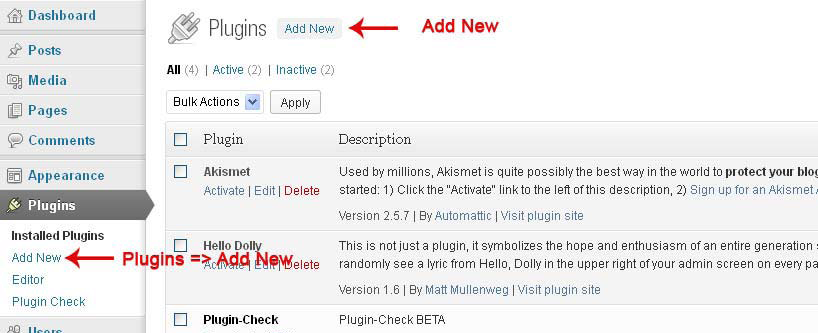
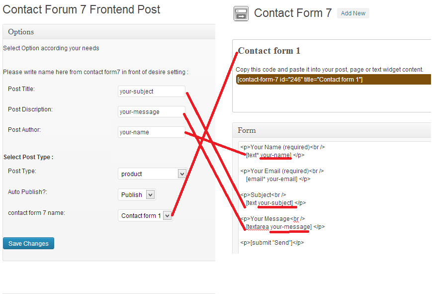

Created: 05/06/2013
By: Somendra kumar
Email: somendrakm@gmail.com
Thank you for purchasing my plugin. If you have any questions that are beyond the scope of this help file, please feel free to email via my user page contact form here. Thanks so much!
Easy way to publish post or save data with contact form 7. this plugin helps you to publish post with contact form 7 also support custom post-type. .
1. Login to WordPress Dashboard and go to Plugins=>Add New.
2.Locate cf-submit-post folder inside the purchased and Zip or achieve it with WinZip, 7-Zip or any other file achieving application.
3.Upload cf-submit-post.zip zipped folder that you just created from the UPLOAD menu at the top sub navigation on the page.
Screen Shot:
4. Click on Install Button to install the Plugin and Activate.
Plugin setting is very easy here is defult setting screenshot:
There are 3 diffrent setting in setting page:
Before activate this plugin download and activate contact form 7 plugin.
http://wordpress.org/plugins/contact-form-7/
I've used the following as listed.
Once again, thank you so much for purchasing this theme. As I said at the beginning, I'd be glad to help you if you have any questions relating to this theme. No guarantees, but I'll do my best to assist. If you have a more general question relating to the themes on ThemeForest, you might consider visiting the forums and asking your question in the "Contact Form 7 Publish Post" section.
Somendra Kumar